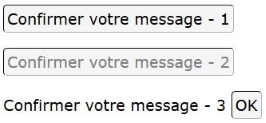

Description

Ce composant permet d'implémenter un bouton d'action, équivalent à l'élément HTML <button>.
Restitution
- le composant doit posséder un nom accessible ;
- l'état activé ou désactivé doit être vocalisé.
Interactions de base au clavier
Les interactions au clavier sont :
- La touche Espace doit déclencher le bouton.
Motif de conception : Button (WAI-ARIA Authoring Practices 1.1)